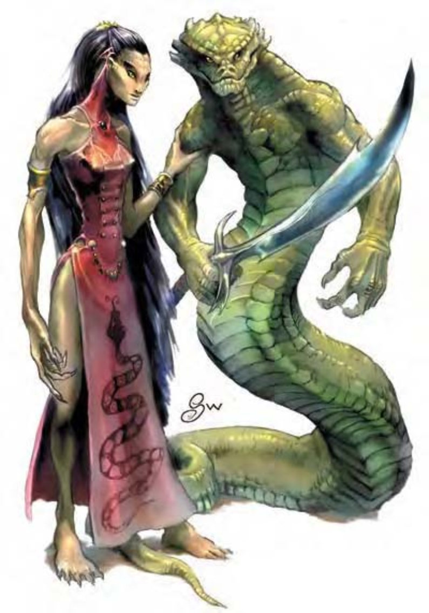

蛇人族是具有蛇类血统的人类后裔，极为邪恶、狡猾、无情。蛇人族不断在暗地里策划邪恶的阴谋，如果有必要的话，也会讨好其他邪恶生物设法结交盟友，但精于算计的他们永远会把自身的利益当作第一考虑。所有蛇人族的成员都具有某些蛇类特征，多半甚至有蛇类的器官。除了本身的语言外，蛇人族也通晓通用语、龙语和深渊语。
战斗蛇人族非常精明，尤其在战斗时更是表露无疑。他们会预先铺设精巧的陷阱，并且善用身边所有地形，偏好突袭而非正面冲突，也喜欢以远程或法术攻击，而非近战。
若不同种类的蛇人组队战斗时，地位和权力最低的个体会先进攻。也就是说，纯种蛇人会比混血蛇人先攻击，其后才是妖蛇人。为了战术需要，队伍的领导者可以命令特定个体提前进行攻击。
“化形”（类法术能力）：蛇人族可通过灵能力化为任何超小型到大型的毒蛇（详见第301页关于蛇的说明）。化形后的蛇人族会失去原本的天生武器（若有的话），而获得毒蛇形态的天生武器。若蛇人的啮咬原本就具有毒素与毒蛇形态的毒素相较，取较强着。
“侦测毒性”（类法术能力）：所有蛇人族一律具有侦测毒性的灵能力，效果与同名法术相同（施法者等级6）。
蛇人族是邪恶的忠诚信徒，他们也非常尊敬所有爬虫类。蛇人族一切生活的中心都在神殿，常常举办血祭仪式。虽然偏好聚居于古老偏远的废墟，但也有曾在人类城市地底建立聚落的纪录。蛇人族对城市或神殿地点会严加守密，他们的建筑风格具有非常丰富的曲线，通常以坡道或滑竿取代楼梯。
妖蛇人是蛇人族的领导阶层，也是宗教领袖，最高地位者称为高等祭司。纯种蛇人则负责所有对外的交涉和沟通事宜，通常会伪装成人类。螟螭蝣是蛇人族最崇高的神�o，一手创造并且赐福整个蛇人族血脉。
| 资料栏位 | 纯种蛇人 (Pureblood) 中型人形怪物 |
|---|---|
| 生命骰 | 4d8 (18HP) |
| 先攻 | +5 |
| 速度 | 30英尺 (6格) |
| 防御等级 | 17 (+1敏捷、+1天生、+3精制镶嵌皮甲、+2精制重型盾)、接触11、措手不及16 |
| 基本攻击/擒抱 | +4 / +4 |
| 攻击 | 精制弯刀+5近战 (1d6 / 18-20)；或精制长弓+6远程 (1d8 / x3) |
| 全力攻击 | 精制弯刀+5近战 (1d6 / 18-20)；或精制长弓+6远程 (1d8 / x3) |
| 占据/触及 | 5英尺 / 5英尺 |
| 特殊攻击 | 类法术能力 |
| 特殊能力 | 黑暗视觉60英尺、“侦测毒性”、法术抗力14 |
| 豁免 | 强韧+1、反射+5、意志+4 |
| 属性 | 力量11、敏捷13、体质11、智力12、感知10、魅力12 |
| 技能 | 专注+7、易容+4*、躲藏+3、知识(任一)+5、聆听+4、侦察+4 |
| 专长 | 警觉B、盲战B、闪避、精通先攻 |
| 环境 | 热带森林 |
| 组织 | 单独、成双、成队 (3-4)、行列 (2-13个纯种蛇人、2-5个混血蛇人及2-4个妖蛇人) 或一族 (20-160个纯种蛇人、10-80个混血蛇人及10-40个妖蛇人) |
| 挑战级数 | 3 |
| 宝藏 | 双倍标准 |
| 阵营 | 通常混乱邪恶 |
| 进化 | 视人物职业而定 |
| 等级修正值 | +2 |
大体来看，这个生物像是臀部扁平、身形瘦长、五官深邃、眼睛眨也不眨的人类。然而仔细观察之下，会发现它的舌头分叉，牙齿尖利，颈部和四肢甚至生有细小的鳞片。纯种蛇人外貌近似人类，具有某些不明显的蛇类特征。纯种蛇人身高体重都接近人类。
战斗比起其他蛇人族，纯种蛇人的智力最低，但仍超过一般人类，而且他们也深深以此为荣。纯种蛇人通常会伪装成人类，混居在人群中充当奸细，为妖蛇人主子卖命。
类法术能力：每天1次――“迷惑动物” (DC=13)、“惊恐术” (DC=12)、“魅惑人类” (DC=12)、“黑暗术”、“纠缠术” (DC=12)。施法者等级4，豁免检定DC的调整值与魅力调整值相同。
技能：*伪装成人类时，纯种蛇人进行“易容”检定具有+5种族加值。
― 纯种蛇人人物具有下列种族特性：
― +2敏捷、+2智力、+2魅力。
― 中型。
― 纯种蛇人的基本行走速度为30英尺。
― 黑暗视觉可达60英尺。
― 种族生命骰：纯种蛇人起始为4级人形怪物，生命骰4d8、基本攻击加值+4、强韧、反射与意志的基本豁免检定则分别是+1、+4及+4。
― 种族技能：纯种蛇人的人形怪物等级使它的技能点数为7 x (2+智力调整值)。它的本职技能为专注、易容、躲藏、知识 (任一)、聆听与侦察。
― 种族专长：纯种蛇人的人形怪物等级具有两个专长，除此之外还具有“警觉”和“盲战”两项额外专长。
― +1天生防御加值。
― 天生武器：抵撞 (1d8)。
― 特殊攻击 (见前文)：类法术能力。
― 特殊能力 (见前文)：化形、侦测毒性、法术抗力=职业等级+14。
― 母语：蛇人语、通用语。额外语言：深渊语、龙语。
― 适合职业：巡林客。
― 等级修正值：+2
| 资料栏位 | 混血蛇人 (Halfblood) 中型人形怪物 |
|---|---|
| 生命骰 | 7d8+7 (38HP) |
| 先攻 | +5 |
| 速度 | 30英尺 (6格) |
| 防御等级 | 20 (+1敏捷、+4天生、+3精制镶嵌皮甲、+2精制重型盾)、接触11、措手不及19 |
| 基本攻击/擒抱 | +7 / +9 |
| 攻击 | 精制弯刀+10近战 (1d6+2 / 18-20)；或精制复合长弓 (+2力量加值) +9远程 (1d8+2 / x3) |
| 全力攻击 | 精制弯刀+10 / +5近战 (1d6+2 / 18-20) 及 啮咬+4近战 (1d6+1附加毒素)；或精制复合长弓 (+2力量加值) +9 / +4远程 (1d8+2 / x3) |
| 占据/触及 | 5英尺 / 5英尺 |
| 特殊攻击 | 毒素、“分泌强酸”、类法术能力 |
| 特殊能力 | 化形、变色、黑暗视觉60英尺、侦测毒性、灵敏嗅觉、法术抗力16 |
| 豁免 | 强韧+3、反射+6、意志+9 |
| 属性 | 力量15、敏捷13、体质18、智力18、感知18、魅力16 |
| 技能 | 专注+11、手艺或知识(任二)+14、躲藏+10*、聆听+16、侦察+16 |
| 专长 | 警觉B、盲战B、寓守于攻、闪避、精通先攻 |
| 环境 | 热带森林 |
| 组织 | 单独、成双、成队 (3-4)、行列 (2-13个纯种蛇人、2-5个混血蛇人及2-4个妖蛇人)，一族 (20-160个纯种蛇人、10-80个混血蛇人及10-40个妖蛇人) |
| 挑战级数 | 5 |
| 宝藏 | 双倍标准 |
| 阵营 | 通常混乱邪恶 |
| 进化 | 视人物职业而定 |
| 等级修正值 | +5 |
这个生物像是身形瘦长、五官深邃、眼睛眨也不眨的人类，体表布满发亮的鳞片，头部从肩膀高高伸起，跟蛇一样，有分岔的舌头和细长的尖牙。
跟纯种蛇人一样，混血蛇人外貌近似人类，但具有明显的蛇类特征，各种毒蛇的特征都有可能出现在混血蛇人身上，如：眼镜蛇的匙状颈部或是响尾蛇背上的菱形花纹。具有相同毒蛇特征的蛇人通常会组成行列，这也是蛇人族中的地位象征。混血蛇人身高体重都接近人类。
战斗混血蛇人通常会让纯种蛇人先发动攻击，自己则利用变色能力躲藏在后面避免陷入近战，并施展类法术能力削弱敌人。直到纯种蛇人伤亡殆尽，混血蛇人才会发动近战攻击。
毒素 (特异)：每次造成伤害后，混血蛇人就会注入毒素 (强韧检定的DC=14)。初始伤害与后续伤害均为1d6点体质伤害。豁免检定DC的调整值与体质调整值相同。
分泌强酸 (类法术能力)：混血蛇人的身体具有能分泌强酸的灵能力。使用此能力之后，会对下一个接触到的生物造成3d6点强酸伤害，被啮咬攻击命中的生物也算。若使用此能力时，混血蛇人正在擒抱或压制敌人，该敌人会受到5d6点强酸伤害。一旦脱离混血蛇人的身体，强酸就不再具有伤害力。而且这种强酸不会对蛇人族造成伤害。
类法术能力：每天3次――“迷惑动物” (DC=15)、“惊恐术” (DC=14)、“纠缠术” (DC=14)；每天1次――“深幽黑暗术”、“中和毒性” (DC=17)、“暗示” (DC=16)。施法者等级8。豁免检定DC的调整值与魅力调整值相同。
变色 (类法术能力)：混血蛇人具有改变体表和装备颜色，使其与环境一致的灵能力，在进行“躲藏”检定时具有+10环境加值。
以上数据已经可以包含大部分具有蛇类头部、鳞片和人类躯干的混血蛇人。然而，蛇人族的诅咒还会造成各式各样不同蛇类特征的混血蛇人。若要随机创造混血蛇人，请掷百分骰然后依结果对照下表。
| 百分骰 | 混血蛇人变体 |
|---|---|
| 01-40 | 如上所述 |
| 41-60 | 人类头部，但手臂是蛇（能够进行两次而非一次啮咬攻击，可造成的伤害为1d4+2附加毒素）。 |
| 61-80 | 下半身除了双腿之外还长出一条蛇尾（速度30英尺，游泳15英尺，可以对小型以下的生物进行紧勒攻击，造成1d4+3点伤害）。 |
| 81-100 | 下半身是蛇尾而非双腿（速度20英尺，攀爬15英尺，游泳15英尺，可以对中型以下的生物进行紧勒攻击，造成1d6+3点伤害）。 |
紧勒 (特异)：一旦通过擒抱检定，具有蛇尾的混血蛇人就能对体型够小的生物造成额外伤害（若同时具有双腿，可造成1d4+3点伤害。没有双腿则可造成1d6+3点伤害）。
| 资料栏位 | 妖蛇人 (Abomination) 大型人形怪物 |
|---|---|
| 生命骰 | 9d8+27 (67HP) |
| 先攻 | +5 |
| 速度 | 30英尺 (6格)、攀爬20英尺、游泳20英尺 |
| 防御等级 | 22 (-1体型、+1敏捷、+10天生、+2精制重型盾)、接触10、措手不及16 |
| 基本攻击/擒抱 | +9 / +17 |
| 攻击 | 精制弯刀+13近战 (1d8+4 / 18-20)；或精制复合长弓 (+4力量加值) +10远程 (2d6+4 / x3) |
| 全力攻击 | 精制弯刀+13 / +8近战 (1d8+4 / 18-20) 及 啮咬+7近战 (2d6+3附加毒素)；或精制复合长弓 (+4力量加值) +10 / +5远程 (2d6+4 / x3) |
| 占据/触及 | 10英尺 / 10英尺 |
| 特殊攻击 | 憎恶、紧勒、1d6+6、精通擒抱、毒素、“分泌强酸”、类法术能力 |
| 特殊能力 | 化形、变色、黑暗视觉60英尺、“侦测毒性”、灵敏嗅觉、法术抗力18 |
| 豁免 | 强韧+6、反射+7、意志+11 |
| 属性 | 力量19、敏捷13、体质17、智力20、感知20、魅力18 |
| 技能 | 专注+15、手艺或知识(任二)+17、躲藏+8*、聆听+19、潜行+12、侦察+19 |
| 专长 | 警觉B、盲战B、寓守于攻、闪避、精通先攻、灵活移动 |
| 环境 | 热带森林 |
| 组织 | 单独、成双、成队 (3-4)、行列 (2-13个纯种蛇人、2-5个混血蛇人及2-4个妖蛇人) 或一族 (20-160个纯种蛇人、10-80个混血蛇人及10-40个妖蛇人) |
| 挑战级数 | 7 |
| 宝藏 | 双倍标准 |
| 阵营 | 通常混乱邪恶 |
| 进化 | 视人物职业而定 |
| 等级修正值 | +7 |
妖蛇人看起来就像一只巨大的蛇，但眼中闪烁着邪恶的光芒，而且只有两只像人类一样的粗壮手臂。妖蛇人是生有像人类一样手臂的蛇形怪物。各种毒蛇的特征都有可能出现妖蛇人身上，例如：黑曼巴蛇的黑色透亮鳞片或是毒蛇三角形的头。具有相同毒蛇特征的蛇人通常会组成行列，这也是蛇人族中的地位象征。妖蛇人长8到15英尺，重200到300磅。
战斗妖蛇人是蛇人族部族的主将，通常待在战线后方指挥其他低等的同类作战。战斗中，妖蛇人会仔细分析情势，找出最危险的敌人及其最具有杀伤力的攻击方式，然后试图以本身的法术和灵能力来对付这些难缠角色。
憎恶（类法术能力）：妖蛇人可以用灵能针对30英尺内一个敌人产生胁迫效果。目标生物必须通过意志检定（DC=22），否则就会异常憎恶蛇类，持续时间10分钟。受害者无法接近蛇类或蛇人身边20英尺，无论死的还是活的都一样。施此能力攻击时，如果20英尺内有蛇类或蛇人，受害者会试图移开。若无法移开或遭到蛇类或蛇人攻击，则可以克服憎恶的效果。受害生物的敏捷值会下降4点，直到效果结束或者离开蛇类或蛇人身边20英尺为止。除上述说明之外，此能力与“嫌恶术”效果相同（施法者等级16），豁免检定DC的调整值与魅力调整值相同。
紧勒 (特异)：一旦通过擒抱检定，妖蛇人即可造成1d6+6点伤害。
精通擒抱 (特异)：当妖蛇人啮咬到大型以下的对手时，即可利用即时动作进行啮咬攻击（视为擒抱），且会引发对方借机攻击。如果啮咬成功，则可定住对手并进“紧勒”。
毒素 (特异)：每次造成伤害后，妖蛇人就会注入毒素（强韧检定的DC=17）。初始伤害与后续伤害均为1d6体质伤害。豁免检定DC的调整值与体质调整值相同。
分泌强酸 (类法术能力)：妖蛇人的身体具有能分泌强酸的灵能力。使用此能力之后，会对下一个接触到的生物造成3d6点强酸伤害，被啮咬攻击命中的生物也算。若使用此能力时，妖蛇人正在擒抱或压制敌人，该敌人会受到5d6点强酸伤害。一旦脱离妖蛇人的身体，强酸就不再具有伤害力。而且这种强酸不会对蛇人族造成伤害。
类法术能力：随意施展――“迷惑动物”(DC=16)、“纠缠术”(DC=15)；每天3次――“深幽黑暗术”、“中和毒性”(DC=18)、“暗示”(DC=17)；每天1次――“化泥变形”(DC=19, 只能变成蛇类形态)、“恐惧术”(DC=18)。施法者等级10。豁免检定DC的调整值与魅力调整值相同。
变色 (类法术能力)：妖蛇人具有改变体表和装备颜色，使其与环境一致的灵能力，在进行“躲藏”检定时具有+10环境加值。
技能：妖蛇人在进行“攀爬”检定时具有+8种族加值。即使被冲撞或受威胁，他们在进行“攀爬”检定时都可以随时取10。
妖蛇人在进行任何特殊动作或闪身避祸时，“游泳”检定具有+8种族加值。即使分心或受困，他们在进行“游泳”检定时都可以随时取10。若以直线前进，则可在游泳时进行奔跑动作。
*使用“变色”能力时，妖蛇人进行“躲藏”检定具有+10环境加值。